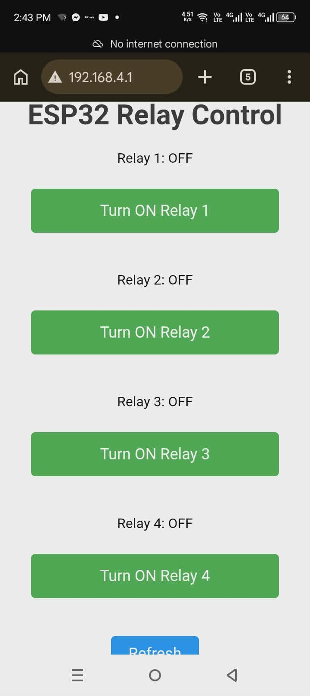

01
UI/UX Design
Wireframes, prototypes, interface systems, and user-centered product design.
Designer • Developer • Problem Solver
I'm Aron J. Gonzaga, an entry-level software engineer with an IT degree and hands-on experience in JavaScript and web development. Alongside my formal education, I hold a TESDA NCII Certificate and have practical experience troubleshooting hardware for friends, family, and clients — including during an internship — which gave me a solid foundation in problem-solving and understanding systems end to end, from the hardware layer up through the applications running on it. I enjoy building and debugging web applications, and I'm eager to apply my skills in a professional environment where I can keep growing as a developer.

About Me
As an aspiring software engineer, I'm drawn to building clean, functional web applications and enjoy the process of debugging and refining code until it works the way it should. I'm looking to grow as a developer within a team environment, and I'm especially interested in opportunities where I can apply my skills while continuing to learn.
Skills
Wireframes, prototypes, interface systems, and user-centered product design.
Responsive, scalable interfaces built with HTML, CSS, JavaScript, and modern frameworks.
Visual identity direction, messaging, and digital design language for growing brands.
Research, user journeys, product thinking, and validation loops for better decisions.
Reusable components, accessibility standards, and efficient collaboration workflows.
Featured Work

An Extension that can be controlled using a mobile application.
View Case StudyA feedback system for user optimization.
View Case StudyExperience
Assisted in the development and maintenance of web-based applications using HTML, CSS, and JavaScript. •Collaborated with developers and technical staff to identify and resolve frontend issues. •Tested web applications across multiple browsers and devices to ensure responsive design and compatibility. •Participated in debugging, troubleshooting, and performance optimization activities. •Maintained technical documentation and supported software deployment processes. •Worked within a team environment to deliver technology solutions efficiently and on schedule.
Provide hands on Customer service at a fast food restaurant.
Let’s Connect